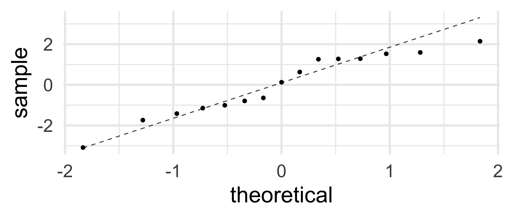

2 Model Diagnostics and Assessment
- Does the model fit data well?
- Should we have fit a line – Is model appropriate for data?
- Are predictors really associated with response?
These questions are absolutely crucial to consider, before we dive into model interpretation and drawing conclusions.
If the model we’ve chosen to fit to our data is not appropriate for it, it’s not just an inconvenience or something to keep in mind. By fitting a multiple regression model, we’re assuming that our dataset meets a number of conditions that make the model and data a good match. If the conditions are not met, any conclusions drawn from the model really can be truly misleading.
A model whose conditions aren’t met is not to be trusted!
So before proceeding to interpretation of model output, we need to learn to do some basic checks – often called “Model Assessment” – to verify that necessary conditions are met.
Along the way, we will also learn a few common metrics used to measure how well a model “fits” data – that is, how close is the match between what the model says and what the data indicate?
3 R-squared
3.1 Simple measure of goodness-of-fit
\[R^2 = 1 - \frac{RSS}{TSS} = 1 - \frac{\sum_{i=1}^{n} (y_i - \hat{y}_i)^2} {\sum_{i=1}^{n} (y_i - \bar{y})^2}\]
4 R-squared
4.1 Simple measure of goodness-of-fit
5 \(R^2\) ranges 0 - 1
5.1 0: no trend; 1: perfect line
6 Regression Conditions
7 Lack of nonlinearity in predictor/response relationship
8 Independence of residuals
9 Normality of residuals
10 Error variance is constant (in other words: residuals have constant variance). Also known as homoscedasticity.
11 Our Model
mod <- lm(response ~ pred1 + pred2, data = my_data)
my_data <- my_data |>
mutate(preds = predict(mod),
resids = resid(mod))12 Residuals Normal: Histogram
12.1 (Be quite generous)
gf_histogram(~resids, data = my_data, bins = 5)13 Resid. Normality: Q-Q plot
13.1 (Be quite generous)
gf_qq(~resids, data = my_data) |>
gf_qqline()
14 Normality of Residuals: Q-Q plot w/CI
14.1 (Does data go far outside the CI (expected range)?)
car::qqp(mod)15 Non-normal residuals?
image to be added
16 Non-normal residuals?
image to be added
17 Lack of Non-Linearity
17.1 DATA PLOT: No trend, OK. Linear trend, OK
gf_point(response ~ predictor, data = my_data)18 Lack of Non-Linearity
18.1 RESIDUALS vs. FITTED: OK if No trends
gf_point(resids ~ preds, data = my_data)19 Constant Residual Variance
19.1 Point cloud should fit well in a rectangle (not trumpet)
19.2 True for resid vs. predicted and resid vs. any predictor
20 Non-linearity?
image to be added
21 Non-constant variance?
image to be added
22 Independence of Residuals
22.1 Ponder sort order; then ACF plot
s245::gf_acf(~mod) |>
gf_lims(y = c(-1,1))23 Residual independence?
image to be added
24 Any LINE Violation -> Danger!
24.1 Conclusions can not be trusted
- slope estimates incorrect
- CIs and p-values too small
- poor prediction accuracy